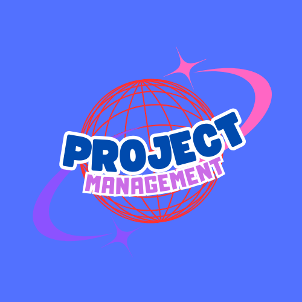

Perencanaan proyek adalah tahap penting dalam manajemen proyek yang bertujuan untuk menentukan langkah-langkah yang perlu dilakukan untuk mencapai tujuan proyek. Proses ini melibatkan identifikasi
tujuan, penyusunan jadwal, alokasi sumber daya, dan pengelolaan risiko. Perencanaan yang baik adalah fondasi kesuksesan proyek, karena dapat membantu memastikan semua pihak yang terlibat memahami
tugas dan tanggung jawab masing-masing.
Langkah pertama dalam perencanaan proyek adalah menetapkan tujuan proyek yang jelas. Tujuan harus bersifat spesifik, terukur, dapat dicapai, relevan, dan memiliki batas waktu (prinsip SMART). Sebagai
contoh, jika proyek bertujuan untuk membangun sebuah aplikasi, tujuan SMART bisa berupa "Mengembangkan aplikasi e-commerce dengan fitur pembayaran digital dalam waktu enam bulan." Tujuan ini membantu
tim proyek memiliki fokus yang sama.
Setelah tujuan ditetapkan, langkah berikutnya adalah membuat Work Breakdown Structure (WBS). WBS adalah alat penting dalam manajemen proyek yang memecah proyek besar menjadi tugas-tugas kecil yang
lebih mudah dikelola. Struktur ini membantu tim memahami pekerjaan apa saja yang perlu dilakukan dan bagaimana tugas-tugas tersebut saling berhubungan. Misalnya, dalam proyek pembuatan aplikasi, WBS
dapat mencakup tugas seperti desain antarmuka, pengembangan fitur, dan pengujian sistem.
Penyusunan jadwal proyek merupakan bagian penting dari perencanaan. Jadwal proyek biasanya dibuat menggunakan alat bantu seperti Gantt Chart, yang menunjukkan urutan dan durasi setiap tugas dalam
bentuk garis waktu. Dengan menggunakan Gantt Chart, manajer proyek dapat memvisualisasikan kapan setiap tugas dimulai dan berakhir, serta bagaimana keterkaitan antar tugas. Hal ini sangat membantu
untuk memantau kemajuan proyek dan mengidentifikasi potensi keterlambatan.
Selain jadwal, alokasi sumber daya juga menjadi elemen utama dalam perencanaan proyek. Sumber daya meliputi tenaga kerja, alat atau perangkat lunak, dan anggaran. Manajer proyek harus memastikan
bahwa sumber daya yang tersedia cukup untuk menyelesaikan semua tugas tanpa membebani anggaran. Contohnya, dalam proyek konstruksi, alokasi sumber daya mencakup peralatan seperti crane, bahan bangunan,
dan jumlah pekerja yang diperlukan untuk setiap fase.
Pengelolaan risiko proyek adalah bagian penting dari perencanaan dasar. Risiko proyek mencakup segala kemungkinan hambatan yang dapat memengaruhi keberhasilan proyek, seperti keterlambatan pengiriman
bahan atau perubahan kebutuhan klien. Manajer proyek perlu membuat Risk Management Plan, yaitu rencana yang mencakup daftar risiko potensial, penilaian dampaknya, dan langkah-langkah untuk mengurangi
risiko tersebut.
Perencanaan proyek dasar adalah kunci untuk memastikan proyek berjalan lancar dari awal hingga akhir. Dengan memiliki tujuan yang jelas, WBS yang terstruktur, jadwal yang realistis, alokasi sumber
daya yang tepat, dan pengelolaan risiko yang baik, tim proyek dapat bekerja lebih efisien dan mengurangi kemungkinan kegagalan. Perencanaan yang baik juga membantu membangun komunikasi yang efektif
antara anggota tim dan stakeholder, sehingga semua pihak dapat bekerja sama untuk mencapai hasil yang diinginkan.
Perencanaan Proyek Dasar
Apa prinsip yang digunakan dalam menetapkan tujuan proyek?
Apa alat untuk memecah proyek menjadi tugas kecil?
Apa alat bantu untuk membuat jadwal proyek?
Apa saja sumber daya yang perlu dialokasikan dalam proyek?
Apa nama dokumen untuk pengelolaan risiko?